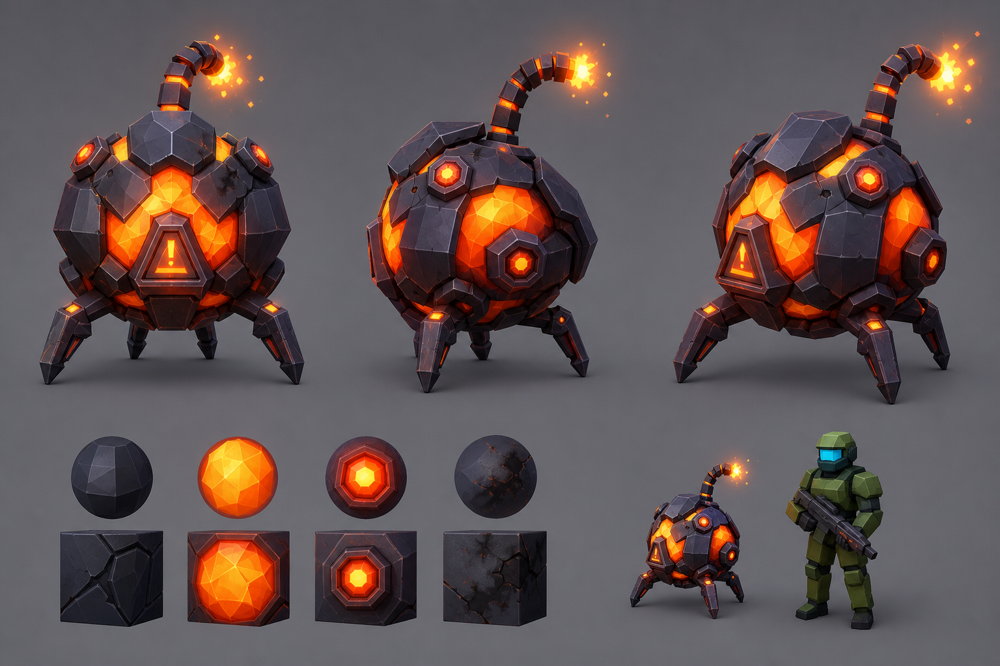
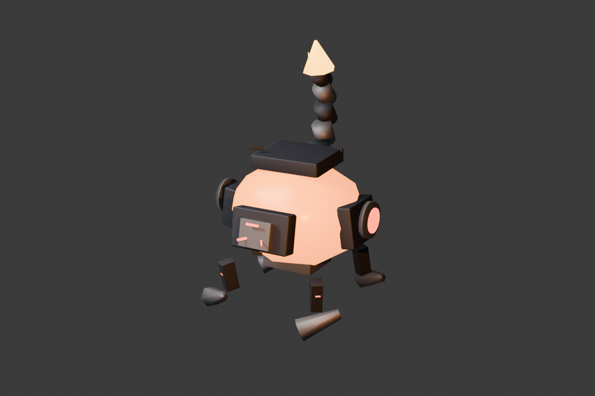

請從左側點選一個角色，這裡會顯示該角色的 Prompt。
我怎麼用 Codex 與 Claude 跑一個虛擬遊戲團隊
這份網頁是給外部讀者看的整理版：從兩個終端機、可追蹤 logs、Obsidian 筆記、Dashboard、GPT Image 2 概念圖、Blender 模型，到遊戲內驗證，完整說明 Terry 如何把 AI 團隊流程變成可執行的製作中控。
目前定位：遊戲不是「完成品」，而是剛開始被整理成可持續開發的生產系統。這份 HTML 是導覽、教學、角色 Prompt、下載文件與開發紀錄的單一入口。
01這份報告在說什麼
這不是一篇單純的開發日誌，而是一套「如何用 AI 工具組成虛擬遊戲團隊」的實作說明。Codex 負責 repo、腳本、驗證、Dashboard、文件整理；Claude in VS Code 負責長篇策略、角色設定、流程設計與協作視窗；Terry 則是整個製作中控的人格與操作層。
2主要 terminal 工作流
28+虛擬團隊角色
3已整理 GLB 資產
1GitHub Pages 遊戲入口
看遊戲外部分享時先讓讀者看到實際成果。
看進度本地進度儀表板，記錄流程、資產與狀態。
看原始資料原版深色規劃已被整理進本頁的「虛擬團隊」分頁。
關鍵資料位置
| 項目 | 位置 | 用途 |
|---|---|---|
| 主專案 | E:\Project\2026\Gorilla Gun Survivor — Web Edition | 遊戲、Dashboard、art pipeline、automation、OpenSpec。 |
| Codex 工作副本 | E:\Codex\gorilla-gun-survivor | Codex 可使用的工作副本與對照區。 |
| Obsidian | E:\Obsidian\Game_GG\南瓜筆記\南瓜虛擬科技 | 長期筆記、handoff、團隊設定與操作紀錄。 |
| 本報告 | studio/教學-Codex與Claude虛擬遊戲團隊完整報告.html | 外部讀者用的教學網站。 |
02虛擬團隊與角色 Prompt
這一頁把 原始團隊規劃.html 的角色資料整理成可點選的分頁介面。外部讀者不用看原始深色頁面，也能點選 CEO、CTO、CAO、Gameplay、Art、QA 等角色，閱讀每個角色的 Prompt 與職責。
03猩猩槍 - 倖存者
這個分頁是專門留給遊戲本體的開發紀錄。從現在開始，每當 Terry / Codex / Claude 推進到一個新的階段，例如新增武器、完成敵人模型、跑過 QA、更新 Dashboard、部署 GitHub Pages，都會回寫到這份 HTML 報告，讓外部讀者知道「目前做到哪裡、用什麼方法做到、下一步要去哪裡」。
為什麼這很重要：遊戲開發還不是結束，而是剛把生產線搭起來。這份 HTML 會變成專案對外展示的黑盒紀錄器，讓每個環節可以被檢查、重現、分享。
公開遊戲連結
GitHub Pages 上的可分享版本。
本地開發伺服器
http://127.0.0.1:5174/
目前已整理的進度
武器資料化
src/data/weapons.json 已加入 validator，build 前會先檢查武器資料。
Shock Baton V2
已輸出 /assets/custom/shock_baton_v2.glb，並在武器資料中指向該模型。
Plasma Bomber
已建立 GPT Image 2 概念圖、Blender blockout / export 腳本與遊戲內資產方向。
回血/救援掉落
src/core/Game.ts 與 src/progression/Pickup.ts 已加入愛心掉落邏輯。
QA 模式
可用 ?qaBombers=1 進入敵人可讀性檢查流程。
長期紀錄
.ops/logs、Obsidian、Dashboard 三處同步重要變更。
04兩個 Terminal 如何跑起來
核心思路是把 terminal 從「一次性操作」改成「可記錄的製作系統」。Terminal A 處理 Live Ops / dev server；Terminal B 處理 build、validator、Dashboard 與文件同步。
Terminal A：Live Ops / Dev Server
cd "E:\Project\2026\Gorilla Gun Survivor — Web Edition" powershell.exe -NoProfile -ExecutionPolicy Bypass -File .\automation\scripts\start-dev.ps1 powershell.exe -NoProfile -ExecutionPolicy Bypass -File .\automation\scripts\status-dev.ps1 powershell.exe -NoProfile -ExecutionPolicy Bypass -File .\automation\scripts\stop-dev.ps1
Terminal B：Build / Dashboard
cd "E:\Project\2026\Gorilla Gun Survivor — Web Edition" npm run validate:weapons npm run build npm run dashboard:update
Codex 與 Claude 的分工
Codex
- 讀 repo、改程式、跑 build、修 validator。
- 維護 Dashboard、HTML 報告與可下載文件。
- 寫 Blender Python fallback、產出 GLB 與 preview。
- 整理 handoff，避免每次開新視窗都重講一次。
Claude in VS Code
- 長篇策略、團隊角色、流程描述與任務分派。
- 透過 VS Code 視窗與 terminal 幫忙維持工作脈絡。
- 當 Blender MCP 可用時，協助 3D 製作；不穩時交由 Codex fallback。
- 整理 pending changes、mailbox、handoff 與下一步行動。
05GPT Image 2 → Blender → Game
官方模型名稱是 gpt-image-2。目前流程是先產生概念圖，再轉成 Blender 可用的模型、材質與貼圖方向，最後輸出 GLB 放進遊戲。這不是「圖片自動變成模型」的魔法，而是一條可追蹤的美術生產線。
1 Brief定義主題、視角、材質、比例尺、輸出要求。
2 GPT Image 2產出 reference sheet 或概念圖。
3 CAO Review審查造型、可讀性、品牌一致性。
4 BlenderBlender MCP 或 Python fallback 建模。
5 GLB輸出到
public/assets/custom。6 QA進遊戲檢查比例、辨識度與效能。
$env:OPENAI_API_KEY="你的 key" npm run art:concept -- studio/art-pipeline/briefs/plasma-bomber-v1.json

Plasma Bomber 概念圖：用 GPT Image 2 產生視覺方向，再轉成 Blender 可製作的 low-poly 資產。

Plasma Bomber V2 Blender preview：目前模型和概念圖不會完全一致，重點是先建立可進遊戲測試的資產迭代管線。
06文件下載與範本
這裡的連結使用 HTML 的 download 屬性。外部讀者點選後可以直接下載 MD / HTML 文件，而不是只看到一段路徑。
Terry 操作索引studio/索引.md
下載歡迎回來 handoffstudio/WELCOME-BACK.md
下載Claude pending changesstudio/CLAUDE-PENDING-CHANGES.md
下載目前交接文件studio/HANDOFF-CURRENT.md
下載團隊狀態studio/TEAM-STATUS.md
下載測試說明studio/TESTING.md
下載GPT Image 2 到 Blender 管線studio/art-pipeline/IMAGE2-BLENDER-PIPELINE.md
下載Shock Baton 美術任務studio/art-pipeline/ART-01-shock-baton.md
下載Terry deploy consoleautomation/workflows/terry-deploy-console.md
下載QA bomber readability reportqa/reports/run-bomber-readability-20260519.md
下載Claude 教學頁studio/教學-我怎麼用Claude跑一個虛擬遊戲團隊.html
下載原始團隊規劃studio/dashboard/原始團隊規劃.html
下載